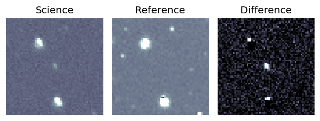
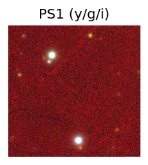
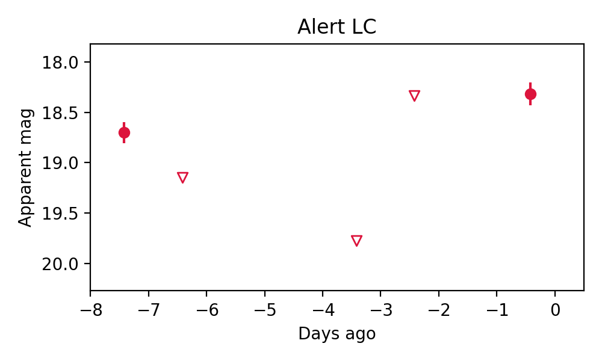

Candidate List 20251203Previous Day Next Day
Section 1: New Sources (age<1d) Section 2: Old (1-5d) sources observed last nightplaceholder
Section 1: New Afterglow/FBOT Cands Last Night (0)
Section 2: Older Sources Observed Last Night (4)
0. ZTF25aceqxff (Afterglow?) [Back to Top] [Share] [Trigger Swift] [Fritz] [Lasair]RA, Dec: 307.5933, 3.4338 20h30m22.39s, 3d26m1.67sGalactic (l, b): 47.98013, -20.14482 ext(g-r) = 0.118
TESS: Sectors [54 81]
PS1: 0 sources in 3 arcsec
LegacySurvey: 1 sources in 3 arcsec Closest: d = 7.82 arcsec, 60.3 deg (east of north) photoz=0.8 (68% bounds 0.54, 1.0), type=REX peak abs mag = -25.23 (68% bounds -24.19, -25.84)

Rise Rate:
g: -99 mag/day
r: 0.49 mag/day
i: -99 mag/day
Fade Rate:
g: -99 mag/day
r: 0.45 mag/day
i: -99 mag/day
1. ZTF25acfjrig (FBOT?) [Back to Top] [Share] [Trigger Swift] [Fritz] [Lasair]RA, Dec: 198.47671, 6.89424 13h13m54.41s, 6d53m39.27sGalactic (l, b): 318.71994, 69.07441 ext(g-r) = 0.036


TESS: Sectors [23 50]
SDSS (10 arcsec):Found SDSS phot-z: z=0.11; peak abs mag = -19.55
PS1: 0 sources in 3 arcsec
LegacySurvey: 1 sources in 3 arcsec Closest: d = 0.62 arcsec, 240.7 deg (east of north) photoz=0.11 (68% bounds 0.1, 0.11), type=SER peak abs mag = -19.33 (68% bounds -19.13, -19.47)

Extinction-corrected gr color:
From alerts: -0.91 +/- 99 mag
Rise Rate:
g: -99 mag/day
r: 0.98 mag/day
i: -99 mag/day
Fade Rate:
g: -99 mag/day
r: -99 mag/day
i: -99 mag/day
2. ZTF25acftqbm (Afterglow?) [Back to Top] [Share] [Trigger Swift] [Fritz] [Lasair]RA, Dec: 105.86043, 34.3811 7h 3m26.50s, 34d22m51.96sGalactic (l, b): 182.5664, 17.21421 ext(g-r) = 0.077


TESS: Sectors [20 44 45 47 60]
PS1: 0 sources in 3 arcsec
LegacySurvey: 1 sources in 3 arcsec Closest: d = 0.09 arcsec, 59.2 deg (east of north) photoz=0.65 (68% bounds 0.39, 0.96), type=PSF peak abs mag = -23.78 (68% bounds -22.45, -24.82)

Rise Rate:
g: 4.35 mag/day
r: -99 mag/day
i: -99 mag/day
Fade Rate:
g: 17.85 mag/day
r: -99 mag/day
i: -99 mag/day
3. ZTF25acftwuw (FBOT?) [Back to Top] [Share] [Trigger Swift] [Fritz] [Lasair]RA, Dec: 162.87326, 7.21388 10h51m29.58s, 7d12m49.97sGalactic (l, b): 242.39103, 55.28721 WARNING: -0.06 deg from ecliptic plane ext(g-r) = 0.034


TESS: Sectors [45 46 72]
SDSS (10 arcsec):Found SDSS phot-z: z=0.40; peak abs mag = -21.80
PS1: 0 sources in 3 arcsec
LegacySurvey: 1 sources in 3 arcsec Closest: d = 1.14 arcsec, 49.1 deg (east of north) photoz=0.28 (68% bounds 0.16, 0.46), type=REX peak abs mag = -20.8 (68% bounds -19.46, -22.06)

Extinction-corrected gr color:
From alerts: -0.04 +/- 99 mag
Rise Rate:
g: 0.23 mag/day
r: -99 mag/day
i: -99 mag/day
Fade Rate:
g: -99 mag/day
r: -99 mag/day
i: -99 mag/day